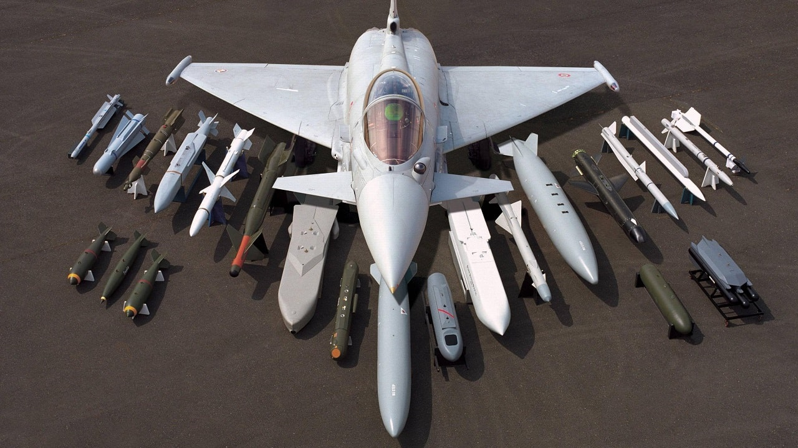
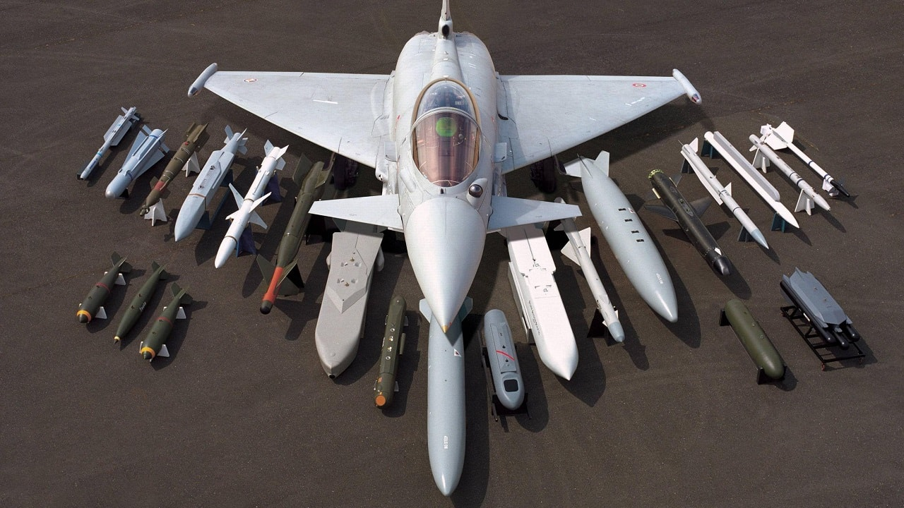

Introduction
Fighter jets, their roles, and use cases.
| Fighter Jet Type | Use Case |
|---|---|
| Air Superiority Fighters | Designed for dominance in air-to-air combat. Used to establish control over enemy airspace (e.g., F-22 Raptor, Su-35). |
| Multirole Fighters | Capable of air-to-air and air-to-ground missions, providing flexibility in modern warfare (e.g., F-35 Lightning II, Dassault Rafale). |
| Stealth Fighters | Equipped with radar-evading technology, ideal for penetrating enemy defenses undetected (e.g., F-117 Nighthawk, J-20). |
| Interceptor Fighters | Specialized in fast response to intercept and destroy incoming enemy bombers or aircraft (e.g., MiG-31, F-106 Delta Dart). |


 
